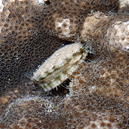
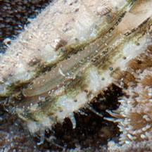
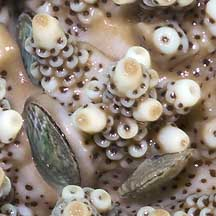
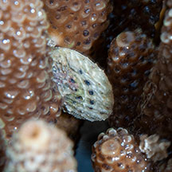
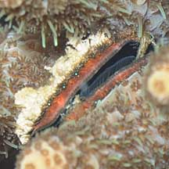

|
|
| bivalves text index | photo index |
| Phylum Mollusca > Class Bivalvia > Family Pectinidae |
| Coral
scallop Pedum spondyloideum* Family Pectinidae updated May 2020 Where seen? This little clam is often seen embedded in living hard corals on many of our Southern shores. Sometimes, one coral colony can host many of these tiny clams. It is also called the Iridescent clam, probably because of its sometimes colourful and iridescent mantle? Features: Diameter 1-1.5cm. A circular two-part shell, thin. In some the shell is covered with encrusting fluff, in others, a pattern of spots may be seen. When submerged, a fringe of tiny tentacles emerge with many tiny, well developed eyes along the mantle edge. |
 Tanah Merah, Jun 11 |
 When submerged, tentacles and tiny eyes can be seen. Beting Bemban Besar, Apr 10 |
| Digging into corals: This clam is often seen in hard corals with branching forms such as Acropora coral and Branching pore coral, as well as leafy forms such as Crinkled sandpaper coral and Carnation coral. The clam excavates the hard coral to create a cavity for itself and attaching to the coral by byssus threads. The clam is usually completely surrounded by living tissue. |
 Pulau Hantu, Apr 07 |
 Pulau Berkas, Jan 01 |
 Beting Bemban Besar, Apr 10 |
| Coral-clam cooperation: The coral provides the clam a safe place with support and protection. The clam may improve water circulation for the coral which helps the coral feed. A study
showed that the clam helped reduce the impact of predatory Crown-of-Thorns sea stars (Acanthaster planci) by repeatedly spitting out jets of water. On the
other hand, the clam may weaken the coral as it excavates a cavity within the coral structure. This page includes all the little clams found in hard corals, for convenience of display. It is possible that they are different species and may even not be scallops but belong to other families. |
*Species are difficult to positively identify without close examination.
On this website, they are grouped by external features for convenience of display.
| Coral scallops on Singapore shores |
On wildsingapore
flickr
|
| Other sightings on Singapore shores |
|
Links
References
|